물류관리사-1교시 (2022-08-06 기출문제)
1과목: 물류관리론
1. 물류시스템에 관한 설명으로 옳지 않은 것은?
- 생산과 소비를 연결하며 공간과 시간의 효용을 창출하는 시스템이다.
- 물류하부시스템은 수송, 보관, 포장, 하역, 물류정보, 유통가공 등으로 구성된다.
- 물류서비스의 증대와 물류비용의 최소화가 목적이다.
- 물류 합리화를 위해서 물류하부시스템의 개별적 비용절감이 전체시스템의 통합적 비용절감보다 중요하다.
- 물류시스템의 자원은 인적, 물적, 재무적, 정보적 자원 등이 있다.
(정답률: 42%)

2. 공동수ㆍ배송의 효과에 관한 설명으로 옳지 않은 것은?
- 차량 적재율과 공차율이 증가한다.
- 물류업무 인원을 감소시킬 수 있다.
- 교통체증 및 환경오염을 줄일 수 있다.
- 물류작업의 생산성이 향상될 수 있다.
- 참여기업의 물류비를 절감할 수 있다.
(정답률: 54%)
3. 다음 설명에 해당하는 공동수ㆍ배송 운영방식은?
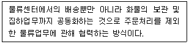
- 노선집하공동형
- 납품대행형
- 공동수주ㆍ공동배송형
- 배송공동형
- 집배송공동형
(정답률: 34%)
4. 공동수ㆍ배송시스템 관련 설명으로 옳지 않은 것은?
- 화물형태가 규격화된 품목은 공동화에 적합하다.
- 참여 기업 간 공동수ㆍ배송에 대한 이해도가 높고 서로 목표하는 바가 유사해야 한다.
- 자사의 정보시스템, 각종 규격 및 서비스에 대한 공유를 지양해야 한다.
- 화물의 규격, 포장, 파렛트 규격 등의 물류표준화가 선행되어야 한다.
- 배송처의 분포밀도가 높으면 배송차량의 적재율 증가로 배송비용을 절감할 수 있다.
(정답률: 34%)
5. 물류조직에 관한 설명으로 옳지 않은 것은?
- 예산관점에서 비공식적, 준공식적, 공식적 조직으로 분류할 수 있다.
- 형태관점에서 사내조직, 독립자회사로 분류할 수 있다.
- 관리관점에서 분산형, 집중형, 집중분산형으로 분류할 수 있다.
- 기능관점에서 라인업무형, 스탭업무형, 라인스탭겸무형, 매트릭스형으로 분류할 수 있다.
- 영역관점에서 개별형, 조달형, 마케팅형, 종합형, 로지스틱스형으로 분류할 수 있다.
(정답률: 24%)
6. 물류표준화 관련 하드웨어 부문의 표준화에 해당하는 것을 모두 고른 것은?
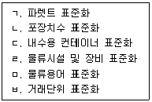
- ㄱ, ㄴ
- ㄱ, ㄷ, ㄹ
- ㄴ, ㄷ, ㅁ
- ㄴ, ㄷ, ㄹ, ㅁ
- ㄷ, ㄹ, ㅁ, ㅂ
(정답률: 42%)
7. James & William이 제시한 물류시스템 설계단계는 전략수준, 구조수준, 기능수준, 이행수준으로 구분한다. 기능수준에 해당하는 것을 모두 고른 것은?
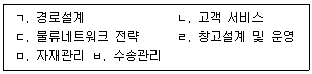
- ㄱ, ㄴ
- ㄴ, ㄹ
- ㄷ, ㄹ, ㅁ
- ㄷ, ㅁ, ㅂ
- ㄹ, ㅁ, ㅂ
(정답률: 25%)
8. 물류표준화에 관한 설명으로 옳지 않은 것은?
- 단위화물체계의 보급, 물류기기체계 인터페이스, 자동화를 위한 규격 등을 고려한다.
- 운송, 보관, 하역, 포장 정보의 일관처리로 효율성을 제고하는 것이다.
- 물류모듈은 물류시설 및 장비들의 규격이나 치수가 일정한 배수나 분할 관계로 조합되어 있는 집합체로 물류표준화를 위한 기준치수를 의미한다.
- 대표적인 Unit Load 치수에는 NULS(Net Unit Load Size)와 PVS(Plan View Size)가 있다.
- 배수치수 모듈은 1,140mm × 1,140mm Unit Load Size를 기준으로 하고, 최대허용공차 -80mm를 인정하고 있는 Plan View Unit Load Size를 기본단위로 하고 있다.
(정답률: 9%)
9. 다음 설명에 해당하는 포장화물의 파렛트 적재 형태는?
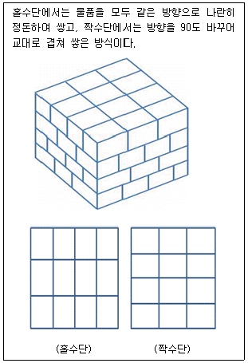
- 스플릿(Split) 적재
- 풍차형(Pinwheel) 적재
- 벽돌(Brick) 적재
- 교대배열(Row) 적재
- 블록(Block) 적재
(정답률: 42%)
10. TOC(Theory of Constraints)에 관한 설명으로 옳은 것은?
- Drum, Buffer, Rope는 공정간 자재의 흐름 관리를 통해 재고를 최소화하고 제조기간을 단축하는 기법으로서 비제약공정을 중점적으로 관리한다.
- Thinking Process는 제약요인을 개선하여 목표를 달성하는 구체적 해결방안을 도출하는 기법으로서 부분 최적화를 추구한다.
- Critical Chain Project Management는 프로젝트의 단계별 작업을 효과적으로 관리하여 기간을 단축하고 돌발 상황에서도 납기수준을 높일 수 있는 기법이다.
- Throughput Account는 통계적 기법을 활용한 품질개선 도구이다.
- Optimized Production Technology는 정의, 측정, 분석, 개선, 관리의 DMAIC 프로세스를 활용한다.
(정답률: 9%)
11. RFID의 특징을 설명한 것으로 옳지 않은 것은?
- 태그에 접촉하지 않아도 인식이 가능하다.
- 바코드에 비해 가격이 비싸다.
- 태그에 상품과 관련한 다양한 기록이 저장될 수 있으므로 개인정보의 노출 또는 사생활 침해 등의 위험성이 발생할 수 있다.
- 읽기(Read)만 가능한 바코드와 달리 읽고 쓰기(Read and Write)가 가능하다.
- 태그 데이터의 변경 및 추가는 자유롭지만 일시에 복수의 태그 판독은 불가능하다.
(정답률: 25%)
12. EAN-13(표준형 A) 바코드에 관한 설명으로 옳지 않은 것은?
- 국가식별 코드는 3자리로 구성되는데, 1982년 이전 EAN International에 가입한 국가의 식별 코드는 2자리 숫자로 부여받았다.
- 제조업체 코드는 상품의 제조업체를 나타내는 코드로서 4자리로 구성된다.
- 체크 디지트는 판독오류 방지를 위한 코드로서 1자리로 구성된다.
- 상품품목 코드는 3자리로 구성된다.
- 취급하는 품목 수가 많은 기업들에게 활용된다.
(정답률: 9%)
13. 다음 ( )에 들어갈 물류정보시스템 용어를 바르게 나열한 것은?
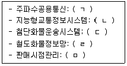
- ㄱ: CVO, ㄴ: ITS, ㄷ: POS, ㄹ: KROIS, ㅁ: TRS
- ㄱ: CVO, ㄴ: KROIS, ㄷ: TRS, ㄹ: ITS, ㅁ: POS
- ㄱ: ITS, ㄴ: POS, ㄷ: CVO, ㄹ: TRS, ㅁ: KROIS
- ㄱ: ITS, ㄴ: TRS, ㄷ: KROIS, ㄹ: CVO, ㅁ: POS
- ㄱ: TRS, ㄴ: ITS, ㄷ: CVO, ㄹ: KROIS, ㅁ: POS
(정답률: 17%)
14. 다음 설명에 해당하는 물류관리기법은?
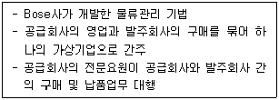
- JIT
- JIT-II
- MRP
- ERP
- ECR
(정답률: 17%)
15. 물류정보기술에 관한 설명으로 옳은 것은?
- ASP(Application Service Provider)는 정보시스템을 자체 개발하는 것에 비해 구축기간이 오래 걸린다.
- CALS 개념은 Commerce At Light Speed로부터 Computer Aided Acquisition & Logistics Support로 발전되었다.
- IoT(Internet of Things)는 인간의 학습능력과 지각능력, 추론능력, 자연언어의 이해능력 등을 컴퓨터 프로그램으로 실현한 기술을 의미한다.
- CIM(Computer Integrated Manufacturing)은 정보시스템을 활용하여 제조, 개발, 판매, 물류 등 일련의 과정을 통합하여 관리하는 생산관리시스템을 말한다.
- QR코드는 컬러 격자무늬 패턴으로 정보를 나타내는 3차원 바코드로서 기존의 바코드보다 용량이 크기 때문에 숫자 외에 문자 등의 데이터를 저장할 수 있다.
(정답률: 9%)
16. A기업의 연간 고정비는 10억 원, 단위당 판매가격은 10만 원, 단위당 변동비는 판매가격의 50 %이다. 연간 손익분기점 판매량 및 손익분기 매출액은?
- 10,000개, 10억 원
- 15,000개, 20억 원
- 20,000개, 20억 원
- 25,000개, 25억 원
- 30,000개, 25억 원
(정답률: 31%)
17. 국토교통부 기업물류비 산정지침에 관한 설명으로 옳지 않은 것은?
- 영역별 물류비는 조달물류비ㆍ사내물류비ㆍ판매물류비ㆍ역물류비로 구분된다.
- 일반기준에 의한 물류비 산정방법은 관리회계 방식에 의해 물류비를 계산한다.
- 간이기준에 의한 물류비 산정방법은 기업의 재무제표를 중심으로 한 재무회계방식에 의해 물류비를 계산한다.
- 간이기준에 의한 물류비 산정방법은 정확한 물류비의 파악을 어렵게 한다.
- 물류기업의 물류비 산정 정확성을 높이기 위해 개발되었으므로 화주기업은 적용대상이 될 수 없다.
(정답률: 0%)
18. 활동기준원가계산(ABC)에 관한 설명으로 옳지 않은 것은?
- 기업이 수행하고 있는 활동을 기준으로 자원, 활동, 원가대상의 원가와 성과를 측정하는 원가계산방법을 말한다.
- 전통적 원가계산방법보다 제품이나 서비스의 실제 비용을 현실적으로 계산할 수 있다.
- 활동별로 원가를 분석하므로 낭비요인이 있는 업무 영역을 파악할 수 있다.
- 임의적인 직접원가 배부기준에 의해 발생하는 전통적 원가계산방법의 문제점을 극복하기 위해 활용된다.
- 소품종 대량생산보다 다품종 소량생산 방식에서 유용성이 더욱 높다.
(정답률: 8%)
19. BSC(Balanced Score Card)에 관한 설명으로 옳지 않은 것은?
- 기업의 재무성과뿐만 아니라 전략실행에 필요한 비재무적 정보를 제공해준다.
- 기업의 전략과 관련된 측정지표의 집합이라고 볼 수 있다.
- 무형자산을 기업의 차별화 전략이나 주주가치로 변환시킬 수 있는 효과적인 기법이다.
- 기업의 성과를 비재무적 관점, 고객 관점, 내부 비즈니스 프로세스 관점, 학습 및 성장 관점에서 측정한다.
- 단기적이고 재무적 성과에 집착하는 경영자의 근시안적 사고를 균형있게 한다.
(정답률: 0%)
20. 물류의 기능에 관한 설명으로 옳지 않은 것은?
- 운송활동은 생산시기와 소비시기의 불일치를 해결하는 기능을 수행한다.
- 고객의 요구에 부합하기 위한 물류의 기능에는 유통가공활동도 포함된다.
- 포장활동은 제품을 보호하고 취급을 용이하게 하며, 상품가치를 제고시키는 역할을 수행한다.
- 운송과 보관을 위해서 화물을 싣거나 내리는 행위는 하역활동에 속한다.
- 물류정보는 전자적 수단을 활용하여 운송, 보관, 하역, 포장, 유통가공 등의 활동을 효율화한다.
(정답률: 0%)
21. 물류에 대한 설명으로 옳지 않은 것은?
- Physical Distribution은 판매영역 중심의 물자 흐름을 의미한다.
- Logistics는 재화가 공급자로부터 조달되고 생산되어 소비자에게 전달되고 폐기되는 과정을 포함한다.
- 공급사슬관리가 등장하면서 기업 내ㆍ외부에 걸쳐 수요와 공급을 통합하여 물류를 최적화하는 개념으로 확장되었다.
- 한국 물류정책기본법상 물류는 운송, 보관, 하역 등이 포함되며 가공, 조립, 포장 등은 포함되지 않는다.
- 쇼(A.W. Shaw)는 경영활동 내 유통의 한 영역으로 Physical Distribution 개념을 정의하였다.
(정답률: 22%)
22. 물류의 영역에 관한 설명으로 옳지 않은 것은?
- 사내물류 - 완제품의 판매로 출하되어 고객에게 인도될 때까지의 물류활동이다.
- 회수물류 - 판매물류를 지원하는 파렛트, 컨테이너 등의 회수에 따른 물류활동이다.
- 조달물류 - 생산에 필요한 원료나 부품이 제조업자의 자재창고로 운송되어 생산공정에 투입 전까지의 물류활동이다.
- 역물류 - 반품물류, 폐기물류, 회수물류를 포함하는 물류활동이다.
- 생산물류 - 자재가 생산공정에 투입될 때부터 제품이 완성되기까지의 물류활동이다.
(정답률: 17%)
23. 다음 설명에 해당하는 수요예측기법은?
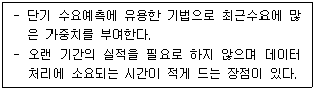
- 시장조사법
- 회귀분석법
- 역사적 유추법
- 델파이법
- 지수평활법
(정답률: 17%)
24. 물류환경 변화에 관한 설명으로 옳지 않은 것은?
- 노동력 부족, 공해 발생, 교통 문제, 지가 상승 등 사회적 환경변화로 인해 물류비 절감의 중요성이 증가하고 있다.
- 소품종 대량생산에서 다품종 소량생산으로 물류환경이 변화하고 있다.
- 전자상거래의 확산으로 인해 라스트마일(Last Mile) 물류비가 감소하고 있다.
- 녹색물류에 대한 관심이 높아짐에 따라 물류활동으로 인한 폐기물의 최소화가 요구된다.
- 기업의 글로벌 전략으로 인해 국제물류의 중요성이 증가하고 있다.
(정답률: 17%)
25. 4자 물류에 관한 설명으로 옳은 것을 모두 고른 것은?
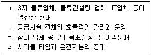
- ㄱ, ㄴ
- ㄴ, ㄷ
- ㄷ, ㄹ
- ㄱ, ㄴ, ㄷ
- ㄴ, ㄷ, ㄹ
(정답률: 9%)
26. 물류관리전략 수립에 관한 설명으로 옳지 않은 것은?
- 고객서비스 달성 목표를 높이기 위해서는 물류비용이 증가할 수 있다.
- 물류관리전략의 목표는 비용절감, 서비스 개선 등이 있다.
- 물류관리의 중요성이 높아짐에 따라 물류전략은 기업전략과 독립적으로 수립되어야 한다.
- 물류관리계획은 전략계획, 전술계획, 운영계획으로 나누어 단계적으로 수립한다.
- 제품수명주기에 따라 물류관리전략을 차별화 할 수 있다.
(정답률: 16%)
27. 도매상의 유형 중에서 한정서비스 도매상(Limited Service Wholesaler)에 해당하지 않는 것은?
- 현금거래 도매상(Cash and Carry Wholesaler)
- 전문품 도매상(Specialty Wholesaler)
- 트럭 도매상(Truck Jobber)
- 직송 도매상(Drop Shipper)
- 진열 도매상(Rack Jobber)
(정답률: 0%)
28. 유통경로 상에서는 경로파워가 발생할 수 있다. 다음 설명에 해당하는 경로파워는?
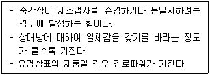
- 보상적 파워
- 준거적 파워
- 전문적 파워
- 합법적 파워
- 강압적 파워
(정답률: 9%)
29. 다음 설명에 해당하는 소매업태는?
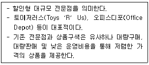
- 팩토리 아웃렛(Factory Outlet)
- 백화점(Department Store)
- 대중양판점(General Merchandising Store)
- 하이퍼마켓(Hypermarket)
- 카테고리 킬러(Category Killer)
(정답률: 17%)
30. 다음 ( )에 들어갈 용어는?
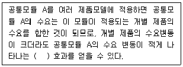
- Risk Pooling
- Quick Response
- Continuous Replenishment
- Rationing Game
- Cross Docking
(정답률: 17%)
31. A기업은 최근 수송부문의 연비개선을 통해 이산화탄소 배출량(kg)을 감소시켰다. 총 주행 거리는 같다고 가정할 때, 연비개선 전 대비 연비개선 후 이산화탄소 배출감소량(kg)은? (단, 이산화탄소 배출량(kg) = 연료사용량(L) × 이산화탄소 배출계수(kg/L))
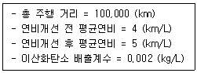
- 1
- 5
- 10
- 40
- 50
(정답률: 8%)
32. 고객이 제품을 주문해서 받을 때 까지 걸리는 총 시간을 의미하는 것은?
- 주문주기시간(Order Cycle Time)
- 주문전달시간(Order Transmittal Time)
- 주문처리시간(Order Processing Time)
- 인도시간(Delivery Time)
- 주문조립시간(Order Assembly Time)
(정답률: 0%)
33. 역물류에 관한 설명으로 옳은 것을 모두 고른 것은?
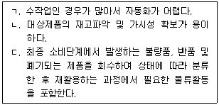
- ㄱ
- ㄱ, ㄴ
- ㄱ, ㄷ
- ㄴ, ㄷ
- ㄱ, ㄴ, ㄷ
(정답률: 0%)
34. 블록체인(Block Chain)에 관한 설명으로 옳은 것을 모두 고른 것은?
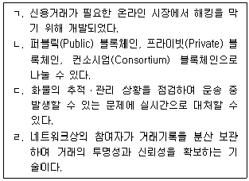
- ㄱ, ㄴ
- ㄷ, ㄹ
- ㄱ, ㄴ, ㄷ
- ㄱ, ㄷ, ㄹ
- ㄱ, ㄴ, ㄷ, ㄹ
(정답률: 9%)
35. LaLonde & Zinszer가 제시한 물류서비스 요소 중 거래 시 요소(Transaction Element)에 해당하는 것을 모두 고른 것은?
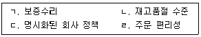
- ㄱ, ㄴ
- ㄱ, ㄷ
- ㄴ, ㄷ
- ㄴ, ㄹ
- ㄷ, ㄹ
(정답률: 17%)
36. 효율적(Efficient) 공급사슬 및 대응적(Responsive) 공급사슬에 관한 설명으로 옳은 것을 모두 고른 것은?
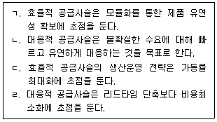
- ㄱ, ㄴ
- ㄱ, ㄹ
- ㄴ, ㄷ
- ㄷ, ㄹ
- ㄱ, ㄴ, ㄷ
(정답률: 0%)
37. A사는 프린터를 생산‧판매하는 업체이다. A사 제품은 전 세계 고객의 다양한 전압과 전원플러그 형태에 맞게 생산된다. A사는 고객 수요에 유연하게 대응하면서 재고를 최소화하기 위한 전략으로 공통모듈을 우선 생산한 후, 고객의 주문이 접수되면 전력공급장치와 전원케이블을 맨 마지막에 조립하기로 하였다. A사가 적용한 공급사슬관리 전략은?
- Continuous Replenishment
- Postponement
- Make-To-Stock
- Outsourcing
- Procurement
(정답률: 9%)
38. 채찍효과(Bullwhip Effect)에 관한 설명으로 옳지 않은 것은?
- 최종소비자의 수요 정보가 공급자 방향으로 전달되는 과정에서 수요변동이 증폭되는 현상을 말한다.
- 구매자의 사전구매(Forward Buying)를 통해 채찍효과를 감소시킬 수 있다.
- 공급사슬 참여기업 간 수요정보 공유를 통해 채찍효과를 감소시킬 수 있다.
- 공급사슬 참여기업 간 정보 왜곡은 채찍효과의 주요 발생원인이다.
- 공급사슬 참여기업 간 파트너쉽을 통해 채찍효과를 감소시킬 수 있다.
(정답률: 9%)
39. 창고에 입고되는 상품을 보관하지 않고 곧바로 소매 점포에 배송하는 유통업체 물류시스템은?
- Cross Docking
- Vendor Managed Inventory
- Enterprise Resource Planning
- Customer Relationship Management
- Material Requirement Planning
(정답률: 9%)
40. 다음 설명에 해당하는 물류관련 보안제도를 바르게 연결한 것은?
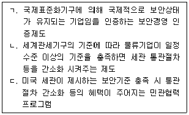
- ㄱ: ISO 6780, ㄴ: AEO, ㄷ: C-TPAT
- ㄱ: ISO 6780, ㄴ: C-TPAT, ㄷ: AEO
- ㄱ: ISO 6780, ㄴ: AEO, ㄷ: ISO 28000
- ㄱ: ISO 28000, ㄴ: AEO, ㄷ: C-TPAT
- ㄱ: ISO 28000, ㄴ: C-TPAT, ㄷ: AEO
(정답률: 7%)
2과목: 화물수송론
41. 화물운송의 3요소에 해당하는 것은?
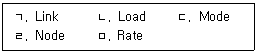
- ㄱ, ㄴ, ㄷ
- ㄱ, ㄴ, ㄹ
- ㄱ, ㄷ, ㄹ
- ㄴ, ㄷ, ㅁ
- ㄴ, ㄹ, ㅁ
(정답률: 9%)
42. 운송에 관한 설명으로 옳지 않은 것은?
- 운송은 화물을 한 장소에서 다른 장소로 이동시키는 기능이 있다.
- 운송 중에 있는 화물을 일시적으로 보관하는 기능이 있다.
- 운송 효율화 측면에서 운송비용을 절감하기 위해 다빈도 소량운송을 실시한다.
- 운송은 장소적 효용과 시간적 효용을 창출한다.
- 운송 효율화는 생산지와 소비지를 확대시켜 시장을 활성화한다.
(정답률: 8%)
43. 운송수단의 선택에 관한 설명으로 옳은 것을 모두 고른 것은?
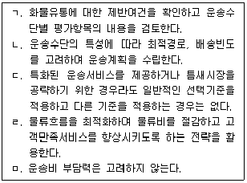
- ㄱ, ㄴ
- ㄱ, ㄴ, ㄹ
- ㄴ, ㄷ, ㄹ
- ㄱ, ㄷ, ㄹ, ㅁ
- ㄴ, ㄷ, ㄹ, ㅁ
(정답률: 9%)
44. 운송수단별 비용 비교에 관한 설명으로 옳지 않은 것은?
- 철도운송은 운송기간 중의 재고유지로 인하여 재고유지비용이 증가할 수 있다.
- 운송수단별 운송물량에 따라 운송비용에 차이가 있어 비교우위가 다르게 나타난다.
- 항공운송은 타 운송수단에 비해 운송 소요시간이 짧아 재고유지비용이 감소한다.
- 해상운송은 장거리 운송의 장점을 가지고 있지만, 대량화물을 운송할 때 단위비용이 낮아져 자동차 운송보다 불리하다.
- 수송비와 보관비는 상관관계가 있으므로 총비용 관점에서 운송수단을 선택한다.
(정답률: 9%)
45. 파이프라인 운송에 관한 설명으로 옳지 않은 것은?
- 초기시설 설치비가 많이 드나 유지비는 저렴한 편이다.
- 환경오염이 적은 친환경적인 운송이다.
- 운송대상과 운송경로에 관한 제약이 적다.
- 유류, 가스를 연속적이고 대량으로 운송한다.
- 컴퓨터시스템을 이용하여 운영의 자동화가 가능하다.
(정답률: 9%)
46. 다음은 운송수단 선택 시 고려해야 할 사항이다. 이에 해당하는 요건은?
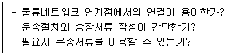
- 안전성
- 신뢰성
- 편리성
- 신속성
- 경제성
(정답률: 0%)
47. 화물운송의 합리화 방안으로 옳지 않은 것은?
- 수송체계의 다변화
- 일관파렛트화(Palletization)를 위한 지원
- 차량운행 경로의 최적화 추진
- 물류정보시스템의 정비
- 운송업체의 일반화 및 소형화 유도
(정답률: 0%)
48. 철도와 화물자동차 운송의 선택기준에 관한 설명으로 옳지 않은 것은?
- 장거리ㆍ대량화물은 철도가 유리하다.
- 근거리ㆍ소량화물은 화물자동차가 경제적이다.
- 채트반(Chatban) 공식은 운송거리에 따른 화물자동차 운송과 철도운송의 선택기준으로 활용된다.
- 채트반 공식은 비용요소를 이용하여 화물자동차 경쟁가능거리의 한계(분기점)를 산정한다.
- 채트반 공식으로 산출된 경계점 거리이내에서는 화물자동차운송보다 철도운송이 유리하다.
(정답률: 9%)
49. 다음과 같은 특징을 가진 운임산정 기준은?
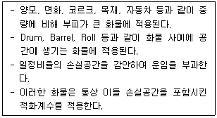
- 중량기준
- 용적기준
- 종가기준
- 개수기준
- 표정기준
(정답률: 9%)
50. 화물자동차의 구조에 의한 분류상 전용특장차로 옳은 것을 모두 고른 것은?
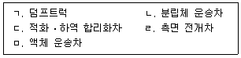
- ㄱ, ㄴ
- ㄴ, ㄷ
- ㄱ, ㄴ, ㅁ
- ㄴ, ㄹ, ㅁ
- ㄷ, ㄹ, ㅁ
(정답률: 0%)
51. 화물자동차의 운행제한 기준으로 옳은 것은?
- 축간 중량 5톤 초과
- 길이 13.7 m 초과
- 너비 2.0 m 초과
- 높이 3.5 m 초과
- 총중량 40 톤 초과
(정답률: 8%)
52. 폴트레일러 트럭(Pole-trailer truck)에 관한 설명으로 옳은 것은?
- 트렉터에 턴테이블을 설치하고 트레일러를 연결한 후, 대형파이프나 H형강, 교각, 대형목재 등 장척물의 수송에 사용한다.
- 트렉터와 트레일러가 완전히 분리되어 있고, 트레일러 자체도 바디를 가지고 있으며 중소형이다.
- 트레일러의 일부 하중을 트렉터가 부담하는 것으로 측면에 미닫이문이 부착되어 있다.
- 컨테이너 트렉터는 트레일러 2량을 연결하여 사용한다.
- 대형 중량화물을 운송하기 위하여 여러 대의 자동차를 연결하여 사용한다.
(정답률: 0%)
53. 화물자동차운송의 고정비 항목으로 옳은 것은?
- 유류비
- 수리비
- 감가상각비
- 윤활유비
- 도로통행료
(정답률: 0%)
54. 컨테이너에 의한 위험물의 운송 시 위험물 수납에 관한 내용으로 옳지 않은 것은?
- 컨테이너는 위험물을 수납하기 전에 충분히 청소 및 건조되어야 한다.
- 위험물을 컨테이너에 수납할 경우에는 해당 위험물의 이동, 전도, 충격, 마찰, 압력손상 등으로 위험이 발생할 우려가 없도록 한다.
- 위험물의 어느 부분도 외부로 돌출하지 않도록 수납한 후에 컨테이너의 문을 닫아야 한다.
- 위험물을 컨테이너 일부에만 수납하는 경우에는 위험물을 컨테이너 문에서 먼 곳에 수납해야 한다.
- 위험물이 수납된 컨테이너를 여닫는 문의 잠금장치 및 봉인은 비상시에 지체 없이 열 수 있는 구조이어야 한다.
(정답률: 9%)
55. 목재, 강재, 승용차, 기계류 등과 같은 중량화물을 운송하기 위하여 지붕과 벽을 제거하고, 4개의 모서리에 기둥과 버팀대만 두어 전후, 좌우 및 위쪽에서 적재ㆍ하역할 수 있는 컨테이너는?
- 건화물 컨테이너(Dry container)
- 오픈탑 컨테이너(Open top container)
- 동물용 컨테이너(Live stock container)
- 솔리드벌크 컨테이너(Solid bulk container)
- 플랫래크 컨테이너(Flat rack container)
(정답률: 9%)
56. 다음에서 설명하고 있는 철도운송 서비스 형태는?
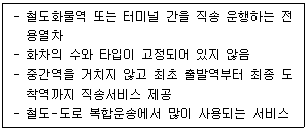
- Block Train
- Coupling & Sharing Train
- Liner Train
- Shuttle Train
- Single Wagon Train
(정답률: 0%)
57. 우리나라 철도화물의 운임체계에 관한 설명으로 옳지 않은 것은?
- 화차(차량)취급운임, 컨테이너 취급운임, 혼재운임으로 구성된다.
- 화차취급운임 중 특대화물, 위험화물, 귀중품의 운송은 할증이 적용된다.
- 화차취급운임 중 정량화된 대량화물이나 파렛트 화물의 운송은 할인이 적용된다.
- 냉동컨테이너의 운송은 할증이 적용된다.
- 공컨테이너와 적컨테이너의 운송은 할증이 적용된다.
(정답률: 0%)
58. 다음에서 설명하고 있는 대륙횡단 철도서비스 형태는?
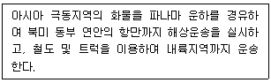
- ALB(American Land Bridge)
- MLB(Mini Land Bridge)
- IPI(Interior Point Intermodal)
- RIPI(Reversed Interior Point Intermodal)
- CLB(Canadian Land Bridge)
(정답률: 0%)
59. 철도운송의 특징으로 옳지 않은 것은?
- 장거리 대량화물의 운송에 유리하다.
- 타 운송수단과의 연계 없이 Door to Door 서비스가 가능하다.
- 안전도가 높고 친환경적인 운송수단이다.
- 전국적인 네트워크를 가지고 있다.
- 계획적인 운송이 가능하다.
(정답률: 9%)
60. 다음에서 설명하는 해상운임 산정 기준으로 옳은 것은?
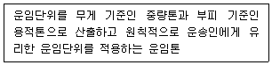
- Gross Ton(G/T)
- Long Ton(L/T)
- Metric Ton(M/T)
- Revenue Ton(R/T)
- Short Ton(S/T)
(정답률: 9%)
61. 선박의 국적(선적)에 관한 설명으로 옳지 않은 것은?
- 전통적인 선박의 국적 취득 요건은 자국민 소유, 자국 건조, 자국민 승선이다.
- 편의치적제도를 활용하는 선사는 자국의 엄격한 선박운항기준과 안전기준에서 벗어날 수 있다.
- 제2선적제도는 기존의 전통적 선적제도를 폐지하고, 역외등록제도와 국제선박등록제도를 신규로 도입한다.
- 편의치적제도는 세제상의 혜택과 금융조달의 용이성으로 인해 세계적으로 확대되었다.
- 우리나라는 제2선적제도를 시행하고 있다.
(정답률: 0%)
62. 항해용선 계약과 나용선 계약을 구분한 것으로 옳지 않은 것은?
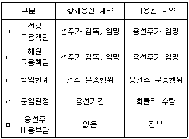
- ㄱ
- ㄴ
- ㄷ
- ㄹ
- ㅁ
(정답률: 0%)
63. 선하증권 운송약관상의 운송인 면책 약관에 관한 설명으로 옳지 않은 것은?
- 잠재하자약관: 화물의 고유한 성질에 의하여 발생하는 손실에 대해 운송인은 면책이다.
- 이로약관: 항해 중에 인명, 재산의 구조, 구조와 관련한 상당한 이유로 예정항로 이외의 지역으로 항해한 경우, 발생하는 손실에 대해 운송인은 면책이다.
- 부지약관: 컨테이너 내에 반입된 화물은 화주의 책임 하에 있으며 발생하는 손실에 대해 운송인은 면책이다.
- 과실약관: 과실은 항해과실과 상업과실로 구분하며 상업과실일 경우, 운송인은 면책을 주장하지 못한다.
- 고가품약관: 송화인이 화물의 운임을 종가율에 의하지 않고 선적하였을 경우, 운송인은 일정금액의 한도 내에서 배상책임이 있다.
(정답률: 0%)
64. 다음 설명에 해당하는 해상운송 관련서류는?
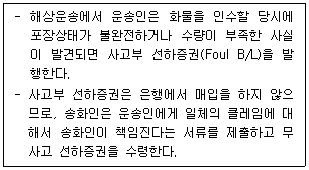
- Letter of Credit
- Letter of Indemnity
- Commercial Invoice
- Certificate of Origin
- Packing List
(정답률: 9%)
65. 항공화물 운임의 결정 원칙으로 옳지 않은 것은?
- 운임은 출발지의 중량에 kg 또는 lb당 적용요율을 곱하여 결정한다.
- 별도 규정의 경우를 제외하고는 요율과 요금은 가장 낮은 것을 적용한다.
- 운임 및 종가 요금은 선불이거나 도착지 지불이어야 한다.
- 화물의 실제 운송 경로는 운임 산출시 근거 경로와 일치하여야만 한다.
- 항공화물의 요율은 출발지국의 현지통화로 설정한다.
(정답률: 0%)
66. 단위탑재용기(ULD: Unit Load Device)에 관한 설명으로 옳은 것을 모두 고른 것은?
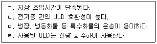
- ㄱ
- ㄱ, ㄷ
- ㄴ, ㄷ
- ㄴ, ㄹ
- ㄱ, ㄷ, ㄹ
(정답률: 0%)
67. 운송주선인의 역할로 옳지 않은 것은?
- 수출화물을 본선에 인도하고 수입화물을 본선으로부터 인수한다.
- 화물포장 및 목적지의 각종 규칙에 관해 조언한다.
- 운송주체로서 화물의 집하, 혼재, 분류 및 인도 등을 수행한다.
- 운송의 통제인 및 배송인 역할을 수행한다.
- 운송수단을 보유하고, 계약운송인으로서 운송책임이 없다.
(정답률: 0%)
68. 항공화물운송주선업자에 관한 설명으로 옳지 않은 것은?
- 화주의 운송대리인이다.
- 전문혼재업자이다.
- 송화인과 House Air Waybill을 이용하여 운송계약을 체결하는 업자이다.
- 수출입 통관 및 보험에 관한 화주의 대리인이다.
- CFS(Container Freight Station)업자이다.
(정답률: 9%)
69. 화물차량이 물류센터를 출발하여 배송지 1, 2, 3을 무순위로 모두 경유한 후, 물류센터로 되돌아가는데 소요되는 최소시간은?
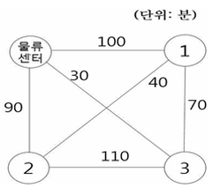
- 210 분
- 230분
- 240분
- 260분
- 280 분
(정답률: 9%)
70. 수송문제에서 초기해에 대한 최적해 검사기법으로 옳은 것은?
- 디딤돌법(Stepping Stone Method)
- 도해법(Graphical Method)
- 트리라벨링법(Tree Labelling Algorithm)
- 의사결정수모형(Decision Tree Model)
- 후방귀납법(Backward Induction)
(정답률: 8%)
71. 8곳의 물류센터를 모두 연결하는 도로를 개설하려 한다. 필요한 도로의 최소 길이는?
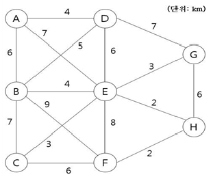
- 19 km
- 21 km
- 23 km
- 25 km
- 27 km
(정답률: 0%)
72. 물류센터에서 8곳 배송지까지 최단 경로 네트워크를 작성하였을 때, 그 네트워크의 총길이는?
- 150 km
- 160 km
- 170 km
- 180 km
- 190 km
(정답률: 0%)
73. 공급지 1, 2에서 수요지 1, 2, 3까지의 수송문제를 최소비용법으로 해결하려한다. 수요지 1, 수요지 2, 수요지 3의 미충족 수요량에 대한 톤당 패널티(penalty)는 각각 150,000원, 200,000원, 180,000원이다. 운송비용과 패널티의 합계는? (단, 공급지와 수요지간 톤당 단위운송비용은 셀의 우측 상단에 있음)
- 10,890,000원
- 11,550,000원
- 11,720,000원
- 12,210,000원
- 12,630,000원
(정답률: 9%)
74. 공급지 A, B, C에서 수요지 W, X, Y, Z까지의 총운송비용 최소화 문제에 보겔추정법을 적용한다. 운송량이 전혀 할당되지 않는 셀(Cell)로만 구성된 것은? (단, 공급지와 수요지간 톤당 단위운송비용은 셀의 우측 상단에 있음)
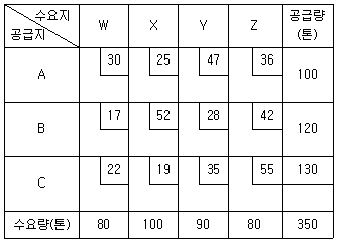
- A-X, B-Z, C-W
- A-X, B-W, C-Z
- A-Z, B-X, C-Y
- A-Y, B-W, C-Z
- A-Y, B-X, C-W
(정답률: 0%)
75. 수송 수요분석에 사용하는 화물분포모형에 해당하는 것은?
- 성장인자법(Growth Factor Method)
- 회귀분석법(Regression Model)
- 성장률법(Growth Rate Method)
- 로짓모형(Logit Model)
- 다이얼모형(Dial Model)
(정답률: 0%)
76. 이용자 측면에서의 택배서비스 특징에 관한 설명으로 옳지 않은 것은?
- 소형ㆍ소량화물을 위한 운송체계
- 공식적인 계약에 따른 개인 보증제도
- 규격화된 포장서비스 제공
- 단일운임ㆍ요금체계로 경제성 있는 서비스 제공
- 운송업자가 책임을 부담하는 일관책임체계
(정답률: 9%)
77. 택배 취급이 금지되는 품목으로 옳지 않은 것은?
- 유리제품
- 상품권
- 복권
- 신용카드
- 현금
(정답률: 9%)
78. 택배표준약관(공정거래위원회 표준약관 제10026호)의 포장에 관한 설명으로 옳은 것을 모두 고른 것은?
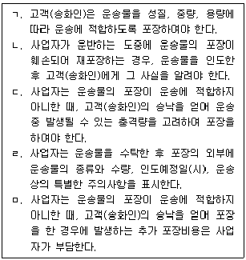
- ㄱ, ㄴ
- ㄱ, ㄷ, ㄹ
- ㄴ, ㄷ, ㄹ
- ㄴ, ㄹ, ㅁ
- ㄱ, ㄷ, ㄹ, ㅁ
(정답률: 0%)
79. 택배표준약관(공정거래위원회 표준약관 제10026호)의 운송물 사고와 사업자책임에 관한 내용으로 옳은 것은?
- 사업자는 운송 중에 발생한 운송물의 멸실, 훼손 또는 연착에 대하여 고객(송화인)의 청구가 있으면 그 발생일로부터 6개월에 한하여 사고증명서를 발행한다.
- 사업자는 운송장에 운송물의 인도예정일의 기재가 없는 경우, 도서ㆍ산간지역은 운송물의 수탁일로부터 5일에 해당하는 날까지 인도한다.
- 운송물의 일부 멸실 또는 훼손에 대한 사업자의 손해배상책임은 고객(수화인)이 운송물을 수령한 날로부터 10일 이내에 그 사실을 사업자에게 통지를 발송하지 아니하면 소멸한다.
- 운송물의 일부 멸실, 훼손 또는 연착에 대한 사업자의 손해배상책임은 고객(수화인)이 운송물을 수령한 날로부터 6개월이 경과하면 소멸한다.
- 사업자가 운송물의 일부 멸실 또는 훼손의 사실을 알면서 이를 숨기고 운송물을 인도한 경우, 사업자의 손해배상책임은 고객(수화인)이 운송물을 수령한 날로부터 5년간 존속한다.
(정답률: 9%)
80. 택배표준약관(공정거래위원회 표준약관 제10026호)의 손해배상에 관한 설명이다. ( )에 들어갈 내용으로 옳은 것은?
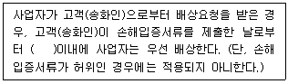
- 7일
- 10일
- 21일
- 30일
- 60일
(정답률: 0%)
3과목: 국제물류론
81. 국제물류관리체계에 관한 설명으로 옳지 않은 것은?
- 현지물류체계는 본국 중심의 생산활동과 국제적으로 표준화된 판매활동이 이루어진다.
- 글로벌 SCM 네트워크 체계는 조달, 생산, 판매, 유통 등 기업 활동이 전(全)세계를 대상으로 진행된다.
- 거점물류체계는 기업 활동의 전부 또는 일부를 특정 경제권의 투자가치가 높은 지역에 배치하고 해당 지역거점을 중심으로 이루어지는 물류관리체계이다.
- 현지물류체계는 국가별 현지 자회사를 중심으로 물류 및 생산활동을 수행하는 체계로 현지국에 생산거점을 둔다.
- 글로벌 SCM 네트워크 체계는 정보자원, 물류인프라, 비즈니스 프로세스를 국경을 초월해 통합적으로 관리하고 조정한다.
(정답률: 9%)
82. 국제물류시스템 중 고전적 시스템에 관한 내용으로 옳은 것은?
- 기업은 해외 자회사 창고까지 저속ㆍ대량운송수단을 이용하여 운임을 절감할 수 있다.
- 수출국 창고에 재고를 집중시켜 운영할 수 있기 때문에 다른 어떤 시스템보다 보관비가 절감된다.
- 수출기업으로부터 해외 자회사 창고로의 출하 빈도가 높기 때문에 해외 자회사창고의 보관비가 상대적으로 절감된다.
- 해외 자회사 창고는 집하ㆍ분류ㆍ배송기능에 중점을 둔다.
- 상품이 생산국 창고에서 출하되어 한 지역의 중심국에 있는 중앙창고로 수송된 후 각 자회사 창고 혹은 고객에게 수송된다.
(정답률: 0%)
83. 선박에 관한 설명으로 옳지 않은 것은?
- 선급제도는 선박의 감항성에 관한 객관적이고 전문적인 판단을 위해 생긴 제도이다.
- 재화중량톤수(DWT)는 관세, 등록세, 소득세, 계선료, 도선료 등의 과세기준이 된다.
- 건현은 수중에 잠기지 않는 수면 위의 선체 높이를 의미한다.
- 만재흘수선은 선박의 항행구역 및 시기에 따라 해수와 담수, 동절기와 하절기, 열대 및 북태평양, 북대서양 등으로 구분하여 선박의 우현 측에 표시된다.
- 선박은 해상에서 사람 또는 물품을 싣고 이를 운반하는데 사용되는 구조물로 부양성, 적재성, 이동성을 갖춘 것이다.
(정답률: 9%)
84. 해상운송계약에 관한 설명으로 옳지 않은 것은?
- 개품운송계약은 불특정 다수의 화주를 대상으로 하며 선박회사에서 일방적으로 결정한 정형화된 약관을 화주가 포괄적으로 승인하는 부합계약 형태를 취한다.
- 정기용선계약은 일정 기간을 정해 용선자에게 선박을 사용하도록 하는 계약으로 표준서식으로 Gencon 서식이 사용된다.
- 항해용선에는 화물의 양에 따라 운임을 계산하는 물량용선(Freight Charter)과 화물의 양에 관계없이 본선의 선복을 기준으로 운임을 결정하는 총괄운임용선(Lump Sum Charter)이 있다.
- 나용선계약은 선박 자체만을 용선하여 선장, 선원, 승무원 및 연료나 장비 등 인적ㆍ물적 요소나 운항에 필요한 모든 비용을 용선자가 부담하는 계약이다.
- Gross Term Charter는 항해용선계약에서 선주가 적ㆍ양하항에서 발생하는 일체의 하역비 및 항비를 부담하는 조건이다.
(정답률: 0%)
85. 정기선 운송의 특징에 관한 설명으로 옳지 않은 것은?
- 항로가 일정하지 않고 매 항차마다 항로가 달라진다.
- 정기선 운송은 공시된 스케줄에 따라 운송서비스를 제공한다.
- 정기선 운임은 태리프(Tariff)를 공시하고 공시된 운임률에 따라 운임이 부과되므로 부정기선 운임에 비해 안정적이다.
- 정기선 운송은 화물의 집화 및 운송을 위해 막대한 시설과 투자가 필요하다.
- 정기선 운송서비스를 제공하는 운송인은 불특정 다수의 화주를 상대로 운송서비스를 제공하는 공중운송인(Public Carrier)이다.
(정답률: 9%)
86. 양하 시 하역비를 화주가 부담하지 않는 운임조건을 모두 고른 것은?
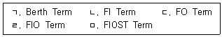
- ㄱ, ㄴ
- ㄱ, ㄹ
- ㄴ, ㄷ
- ㄷ, ㅁ
- ㄷ, ㄹ, ㅁ
(정답률: 17%)
87. 1998년 미국 외항해운개혁법(OSRA)의 주요 내용으로 옳지 않은 것은?
- FMC에 선사의 태리프(Tariff) 신고의무를 폐지하였다.
- 우대운송계약(Service Contract)을 허용하되 서비스계약 운임률, 서비스 내용, 내륙운송구간, 손해배상 등 주요 내용을 대외비로 인정해주고 있다.
- 비슷한 조건의 화주가 선사에게 동등한 조건을 요구할 수 있는 'me – too'조항을 삭제하여 선사의 화주에 대한 차별대우를 인정해 주었다.
- NVOCC의 자격요건을 강화하여 해상화물운송주선인과 동일하게 FMC로부터 면허취득을 의무화하였다.
- 컨소시엄, 전략적 제휴 등 공동행위 및 경쟁제한 행위를 금지시켰다.
(정답률: 9%)
88. 다음 설명에 해당하는 정기선 운임은?
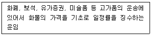
- Special Rate
- Open Rate
- Dual Rate
- Ad Valorem Freight
- Pro Rate Freight
(정답률: 9%)
89. 항해용선계약에 포함되지 않는 내용은?
- Laytime
- Off Hire
- Demurrage
- Cancelling Date
- Despatch Money
(정답률: 0%)
90. 최근 정기선 시장의 변화에 해당하지 않는 것은?
- 항로안정화협정 또는 협의협정체결 증가
- 선사 간 전략적 제휴 증가
- 선박의 대형화
- 글로벌 공급망 확대에 따른 서비스 범위의 축소
- 해운관련 기업에서 블록체인 등 디지털 기술의 도입
(정답률: 9%)
91. Gencon Charter Party(1994)와 관련된 정박시간표(time sheet)의 기재사항으로 옳지 않은 것은?
- 도착일시 및 접안일시
- 하역준비완료일시 및 하역준비완료통지서 제출일시
- 하역개시일시 및 하역실시기간
- 용선계약서에 약정된 하역률 및 허용정박기간
- 7일 하역량 및 누계
(정답률: 0%)
92. 다음 설명에 해당하는 부정기선 운임은?
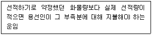
- Dead Freight
- Lump Sum Freight
- Long Term Contract Freight
- Freight All Kinds Rate
- Congestion Surcharge
(정답률: 17%)
93. Hamburg Rules(1978)상 청구 및 소송에 관한 내용이 옳게 나열된 것은?
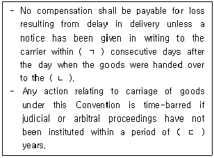
- ㄱ: 30, ㄴ: consignee, ㄷ: two
- ㄱ: 30, ㄴ: consignor, ㄷ: three
- ㄱ: 60, ㄴ: consignee, ㄷ: two
- ㄱ: 60, ㄴ: consignor, ㄷ: three
- ㄱ: 90, ㄴ: consignee, ㄷ: three
(정답률: 0%)
94. 항공화물의 품목분류요율(CCR) 중 할증요금 적용품목으로 옳지 않은 것은?
- 금괴
- 화폐
- 잡지
- 생동물
- 유가증권
(정답률: 9%)
95. 항공화물 손상(damage) 사고로 생동물이 수송 중 폐사되는 경우를 뜻하는 용어는?
- Breakage
- Wet
- Spoiling
- Mortality
- Shortlanded
(정답률: 17%)
96. 항공화물운송장에 관한 설명으로 옳지 않은 것은?
- 송화인은 항공화물운송장 원본 3통을 1조로 작성하여 화물과 함께 운송인에게 교부하여야 한다.
- 제1원본(녹색)에는 운송인용이라고 기재하고 송화인이 서명하여야 한다.
- 제2원본(적색)에는 수화인용이라고 기재하고 송화인 및 운송인이 서명한 후 화물과 함께 도착지에 송부하여야 한다.
- 제3원본(청색)에는 송화인용이라고 기재하고 운송인이 서명하여 화물을 인수한 후 송화인에게 교부하여야 한다.
- 송화인은 항공화물운송장에 기재된 화물의 명세ㆍ신고가 정확하다는 것에 대해 그 항공화물운송장을 누가 작성했든 책임을 질 필요가 없다.
(정답률: 9%)
97. 복합운송증권(FIATA FBL) 이면 약관 상 정의와 관련된 용어가 옳게 나열된 것은?
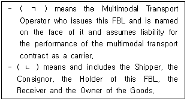
- ㄱ: Freight Forwarder, ㄴ: Merchant
- ㄱ: Freight Forwarder, ㄴ: Shipowner
- ㄱ: NVOCC, ㄴ: Merchant
- ㄱ: NVOCC, ㄴ: Shipowner
- ㄱ: VOCC, ㄴ: Merchant
(정답률: 0%)
98. 국제복합운송에 관한 설명으로 옳지 않은 것은?
- 하나의 계약으로 운송의 시작부터 종료까지 전(全)과정에 걸쳐, 운송물을 적어도 2가지 이상의 서로 다른 운송수단으로 운송하는 것을 말한다.
- 각 구간별로 분할된 운임이 아닌 전(全)구간에 대한 일관운임(through rate)을 특징으로 한다.
- 1인의 계약운송인이 누가 운송을 실행하느냐에 관계없이 운송 전체에 대해 단일 운송인책임(single carrier's liability)을 진다.
- 하나의 운송수단에서 다른 운송수단으로 신속하게 환적할 수 있는 컨테이너 운송의 개시와 함께 비약적으로 발달하였다.
- NVOCC는 자신이 직접 선박을 소유하고 화주와 운송계약을 체결하며 일관선하증권(through B/L)을 발행한다.
(정답률: 0%)
99. 다음 설명에 해당하는 복합운송인 책임 체계는?
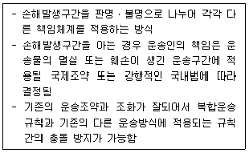
- strict liability
- uniform liability system
- network liability system
- liability for negligence
- modified liability system
(정답률: 0%)
100. 국제운송조약 중 항공운송과 관련되는 조약을 모두 고른 것은?
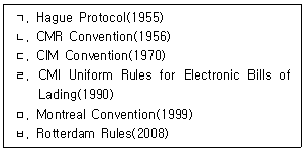
- ㄱ, ㄹ
- ㄱ, ㅁ
- ㄱ, ㄴ, ㅁ
- ㄴ, ㄷ, ㅂ
- ㄴ, ㄷ, ㄹ, ㅂ
(정답률: 0%)
101. 공항터미널에서 사용되는 조업장비가 아닌 것은?
- High Loader
- Transporter
- Tug Car
- Dolly
- Transfer Crane
(정답률: 9%)
102. 다음 설명에 해당하는 컨테이너는?
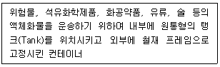
- Dry Container
- Flat Rack Container
- Solid Bulk Container
- Liquid Bulk Container
- Open Top Container
(정답률: 9%)
103. 컨테이너 분류에 관한 설명으로 옳지 않은 것은?
- 크기에 따라 ISO 규격 20 feet, 40 feet, 40 feet High Cubic 등이 사용되고 있다.
- 재질에 따라 철재컨테이너, 알루미늄컨테이너, 강화플라스틱컨테이너 등으로 분류된다.
- 용도에 따라 표준컨테이너, 온도조절컨테이너, 특수컨테이너 등으로 분류된다.
- 알루미늄컨테이너는 무겁고 녹이 스는 단점이 있으나 제조원가가 저렴하여 많이 이용된다.
- 냉동컨테이너는 과일, 야채, 생선, 육류 등의 보냉이 필요한 화물을 운송하기 위한 컨테이너이다.
(정답률: 8%)
104. 다음에 해당하는 선화증권의 법적성질이 옳게 나열된 것은?
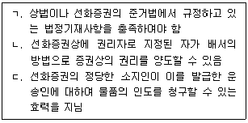
- ㄱ: 요식증권, ㄴ: 지시증권, ㄷ: 채권증권
- ㄱ: 요식증권, ㄴ: 유가증권, ㄷ: 채권증권
- ㄱ: 요인증권, ㄴ: 지시증권, ㄷ: 처분증권
- ㄱ: 요인증권, ㄴ: 제시증권, ㄷ: 인도증권
- ㄱ: 문언증권, ㄴ: 제시증권, ㄷ: 인도증권
(정답률: 9%)
1⑤. 해륙복합운송 경로에 관한 설명으로 옳지 않은 것은?
- SLB(Siberia Land Bridge)는 한국, 일본 등 극동지역의 화물을 해상운송한 후 시베리아 대륙횡단철도를 이용하여 유럽이나 중동까지 운송하는 방식이다.
- CLB(China Land Bridge)는 한국, 일본 등 극동지역의 화물을 해상운송한 후 중국대륙철도와 실크로드를 이용하여 유럽까지 운송하는 방식이다.
- IPI(Interior Point Intermodal)는 한국, 일본 등 극동지역의 화물을 해상운송한 후 캐나다 대륙횡단철도를 이용하여 캐나다의 동해안 항만까지 운송하는 방식이다.
- ALB(America Land Bridge)는 한국, 일본 등 극동지역의 화물을 해상운송한 후 미국대륙을 철도로 횡단하고 유럽지역까지 다시 해상운송하는 방식이다.
- MLB(Mini Land Bridge)는 한국, 일본 등 극동지역의 화물을 해상운송한 후 철도와 트럭을 이용하여 미국 동해안이나 미국 멕시코만 지역의 항만까지 운송하는 방식이다.
(정답률: 9%)
106. 다음에서 설명하는 물류보안 제도는?
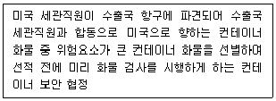
- 10 + 2 rule
- CSI
- ISPS Code
- AEO
- ISO 28000
(정답률: 8%)
107. 다음은 항공화물운송장과 선화증권을 비교한 표이다. ( )에 들어갈 내용을 순서대로 나열한 것은?
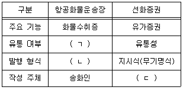
- ㄱ: 유통성, ㄴ: 기명식, ㄷ: 송화인
- ㄱ: 유통성, ㄴ: 기명식, ㄷ: 운송인
- ㄱ: 비유통성, ㄴ: 지시식, ㄷ: 송화인
- ㄱ: 비유통성, ㄴ: 지시식, ㄷ: 운송인
- ㄱ: 비유통성, ㄴ: 기명식, ㄷ: 운송인
(정답률: 15%)
108. 컨테이너 운송에 관한 설명으로 옳지 않은 것은?
- 화물취급의 편리성과 운송의 신속성으로 인해 운송비를 절감할 수 있다.
- 하역작업의 기계화와 업무절차 간소화로 인하여 하역비와 인건비를 절감할 수 있다.
- 해상운송과 육상운송을 원만하게 연결하고 환적시간을 단축시킴으로써 신속한 해륙일관운송을 가능하게 한다.
- 송화인 문전에서 수화인 문전까지 효과적인 Door - to - Door 서비스를 구현할 수 있다.
- CY/CFS(FCL/LCL)운송은 수출지 CY로부터 수입지 CFS까지 운송하는 방식으로 다수의 송화인과 다수의 수화인으로 구성되어져 있다.
(정답률: 9%)
109. 복합운송증권 기능에 관한 설명으로 옳지 않은 것은?
- 복합운송증권은 물품수령증으로서의 기능을 가진다.
- 복합운송증권은 운송계약 증거로서의 기능을 가진다.
- 지시식으로 발행된 복합운송증권은 배서ㆍ교부로 양도가 가능하다.
- 복합운송증권은 수령지로부터 최종인도지까지 전(全)운송구간을 운송인이 인수하였음을 증명한다.
- UNCTAD/ICC규칙(1991)상 복합운송증권은 유통성으로만 발행하여야 한다.
(정답률: 8%)
110. 컨테이너운송에 관한 국제협약이 아닌 것은?
- CCC(Customs Convention on Container, 1956)
- TIR(Transport International Routiere, 1959)
- ITI(Customs Convention on the International Transit of Goods, 1971)
- CSC(International Convention for Safe Container, 1972)
- YAR(York - Antwerp Rules, 2004)
(정답률: 8%)
111. ICC(A)(2009)의 면책위험에 해당하지 않는 것은?
- 보험목적물의 고유의 하자 또는 성질로 인하여 발생한 손상
- 포획, 나포, 강류, 억지 또는 억류(해적행위 제외) 및 이러한 행위의 결과로 발생한 손상
- 피보험자가 피보험목적물을 적재할 때 알고 있는 선박 또는 부선의 불감항으로 생긴 손상
- 동맹파업자, 직장폐쇄노동자 또는 노동쟁의, 소요 또는 폭동에 가담한 자에 의하여 발생한 손상
- 피보험목적물 또는 그 일부에 대한 어떠한 자의 불법행위에 의한 고의적인 손상 또는 고의적인 파괴
(정답률: 0%)
112. IncotermsⓇ 2020에서 물품의 인도에 관한 설명으로 옳은 것은?
- CPT 규칙에서 매도인은 지정선적항에서 매수인이 지정한 선박에 적재하여 인도한다.
- EXW 규칙에서 지정인도장소 내에 이용 가능한 복수의 지점이 있는 경우에 매도인은 그의 목적에 가장 적합한 지점을 선택할 수 있다.
- DPU 규칙에서 매도인은 물품을 지정목적지에서 도착운송수단에 실어둔 채 양하 준비된 상태로 매수인의 처분 하에 둔다.
- FOB 규칙에서 매수인이 운송계약을 체결할 의무를 가지고, 매도인은 매수인이 지정한 선박의 선측에 물품을 인도한다.
- FCA 규칙에서 지정된 물품 인도 장소가 매도인의 영업구내인 경우에는 물품을 수취용 차량에 적재하지 않은 채로 매수인의 처분 하에 둠으로써 인도한다.
(정답률: 0%)
113. Marine Insurance Act(1906)에서 비용손해에 관한 설명으로 옳은 것은?
- 특별비용은 공동해손과 손해방지비용을 모두 포함한 비용을 말한다.
- 제3자나 보험자가 손해방지행위를 했다면 그 비용은 손해방지비용으로 보상될 수 있다.
- 특별비용은 보험조건에 상관없이 정당하게 지출된 경우 보험자로부터 보상받을 수 있다.
- 보험자의 담보위험 여부에 상관없이 발생한 손해를 방지하기 위해 지출한 구조비는 보상받을 수 있다.
- 보험목적물의 안전과 보존을 위하여 구조계약을 체결했을 경우 발생하는 비용은 특별비용으로 보상될 수 있다.
(정답률: 0%)
114. 상사중재에 관한 설명으로 옳지 않은 것은?
- 중재인은 해당분야 전문가인 민간인으로서 법원이 임명한다.
- 비공개로 진행되어 사업상의 비밀을 그대로 유지할 수 있다.
- 중재합의는 분쟁발생 전후를 기준으로 사전합의방식과 사후합의방식이 있다.
- 뉴욕협약(1958)에 가입된 국가 간에는 중재판정의 승인 및 집행이 보장된다.
- 중재판정은 법원의 확정판결과 동일한 효력을 가지며 중재인은 자기가 내린 판결을 철회하거나 변경할 수 없다.
(정답률: 8%)
115. 다음 매도인의 의무를 모두 충족하는 IncotermsⓇ 2020 규칙으로 옳은 것은?
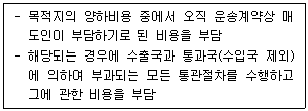
- CFR
- CIF
- FAS
- DAP
- DDP
(정답률: 0%)
116. 관세법상 특허보세구역에 관한 설명으로 옳은 것은?
- 보세전시장에서는 박람회 등의 운영을 위하여 외국물품을 장치ㆍ전시하거나 사용할 수 있다.
- 보세창고의 경우 장치기간이 지난 내국물품은 그 기간이 지난 후 30일 내에 반출하면 된다.
- 보세공장에서는 내국물품은 사용할 수 없고, 외국물품만을 원료 또는 재료로 하여 제품을 제조ㆍ가공할 수 있다.
- 보세건설장 운영인은 보세건설장에서 건설된 시설을 수입신고가 수리되기 전에 가동해도 된다.
- 보세판매장에서 판매하는 물품의 반입, 반출, 인도, 관리에 관한 사항은 산업통상자원부령으로 정한다.
(정답률: 9%)
117. IncotermsⓇ 2020 규칙이 다루고 있지 않은 것을 모두 고른 것은?
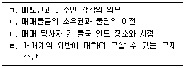
- ㄱ, ㄴ
- ㄱ, ㄷ
- ㄴ, ㄷ
- ㄴ, ㄹ
- ㄷ, ㄹ
(정답률: 0%)
118. 관세법상 수입통관에 관한 설명으로 옳지 않은 것은?
- 여행자가 외국물품인 휴대품을 관세통로에서 소비하거나 사용하는 경우는 수입으로 본다.
- 우편물은 수입신고를 생략하거나 관세청장이 정하는 간소한 방법으로 신고할 수 있다.
- 세관장은 수입에 관한 신고서의 기재사항에 보완이 필요한 경우 해당물품의 통관을 보류할 수 있다.
- 관세청장은 수입하려는 물품에 대하여 검사대상, 검사범위, 검사방법 등에 관하여 필요한 기준을 정할 수 있다.
- 수입하려는 물품의 신속한 통관이 필요한 때에는 해당물품을 적재한 선박이나 항공기가 입항하기 전에 수입신고할 수 있다.
(정답률: 0%)
119. ICD의 기능에 관한 설명으로 옳지 않은 것은?
- CY, CFS 시설 등을 통해 컨테이너의 장치ㆍ보관 기능을 수행한다.
- 항만에서 이루어지는 본선적재작업과 마셜링 기능을 수행한다.
- 통관절차를 내륙으로 이동함으로써 내륙통관기지로서의 기능을 수행한다.
- 화물의 일시적 저장과 취급에 대한 서비스를 제공한다.
- 소량화물을 컨테이너 단위로 혼재작업을 행하는 기능을 수행한다.
(정답률: 9%)
120. 비엔나협약(CISG, 1980)에서 승낙의 효력에 관한 설명으로 옳은 것은?
- 분쟁해결에 관한 부가적 조건을 포함하고 있는 청약에 대한 회답은 승낙을 의도하고 있는 경우 승낙이 될 수 있다.
- 청약에 대한 동의를 표시하는 상대방의 진술뿐만 아니라 침묵 또는 부작위는 그 자체만으로 승낙이 된다.
- 승낙을 위한 기간이 경과한 승낙은 당사자 간의 별도의 합의가 없더라도 원칙적으로 계약을 성립시킬 수 있다.
- 서신에서 지정한 승낙기간은 서신에 표시되어 있는 일자 또는 서신에 일자가 표시되지 아니한 경우에는 봉투에 표시된 일자로부터 계산한다.
- 승낙기간 중 기간의 말일이 승낙자 영업소 소재지의 공휴일 또는 비영업일에 해당하여 승낙의 통지가 기간의 말일에 청약자에게 도달할 수 없는 경우에도 공휴일 또는 비영업일은 승낙기간의 계산에 산입한다.
(정답률: 9%)